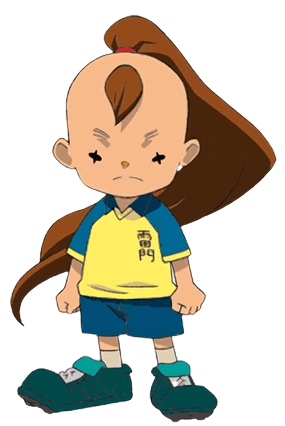

TIM SAUNDERS
{% for item in statistiche_7 %}
Squadra: {{ item[0] }}
Posizione: {{ item[1] }}
Elemento: {{ item[2] }}
Tiro: {{ item[3] }}
Fisico: {{ item[4] }}
Controllo: {{ item[5] }}
Difesa: {{ item[6] }}
Velocità: {{ item[7] }}
Stamina: {{ item[8] }}
Determinazione: {{ item[9] }}
Prima mossa: {{ item[10] }}
Seconda mossa: {{ item[11] }}
Terza mossa: {{ item[12] }}
Quarta mossa:{{ item[13] }}
{% endfor %}
BIOGRAFIA
Tim Saunders (少林寺歩 Ayumu Shōrinji), soprannominato Timmy (Shōrin 少林) è un centrocampista della Raimon e dei Dark Emperors.
Timmy è il giocatore più basso della Raimon.
Ha piccoli occhi neri a croce.
Ha lunghi capelli marroni raccolti in una coda di cavallo e un piccolo ciuffo sulla fronte dello stesso colore.
Il resto della testa è pelata. Indossa sempre la divisa della squadra.
Timmy è piccolo di statura, ma molto abile e determinato.
È molto bravo nelle arti marziali, che per lui saranno la base per imparare a giocare a calcio.
Rispetta molto il suo capitano, Mark, e lo sostiene sempre.
È un elemento positivo per la squadra, perchè contrinuisce a tenere alto il morale.
Sotto l'influsso della Pietra di Alius diventa più arrogante e deciso,
tornando poi normale una volta libero dall'energia del meteorite.